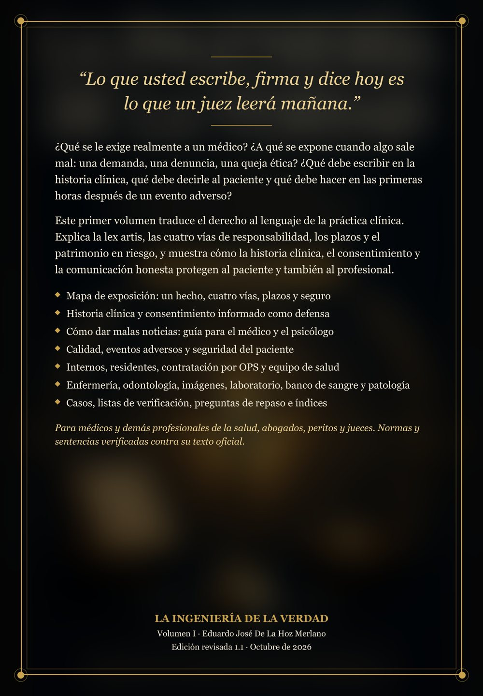

Volumen I · Para médicos y profesionales de la salud
Qué se le exige al médico y cómo ejercer con seguridad
“Lo que usted escribe, firma y dice hoy es lo que un juez leerá mañana.”
Traduce el derecho al lenguaje de la práctica clínica: la lex artis, las cuatro vías de responsabilidad, los plazos y el patrimonio en riesgo, y cómo la historia clínica, el consentimiento y la comunicación honesta protegen al paciente y también al profesional.
- Mapa de exposición: un hecho, cuatro vías, plazos y seguro
- Historia clínica y consentimiento informado como defensa
- Cómo dar malas noticias: guía para el médico y el psicólogo
- Calidad, eventos adversos y seguridad del paciente
- Internos, residentes, contratación por OPS y equipo de salud
- Enfermería, odontología, imágenes, laboratorio, banco de sangre y patología